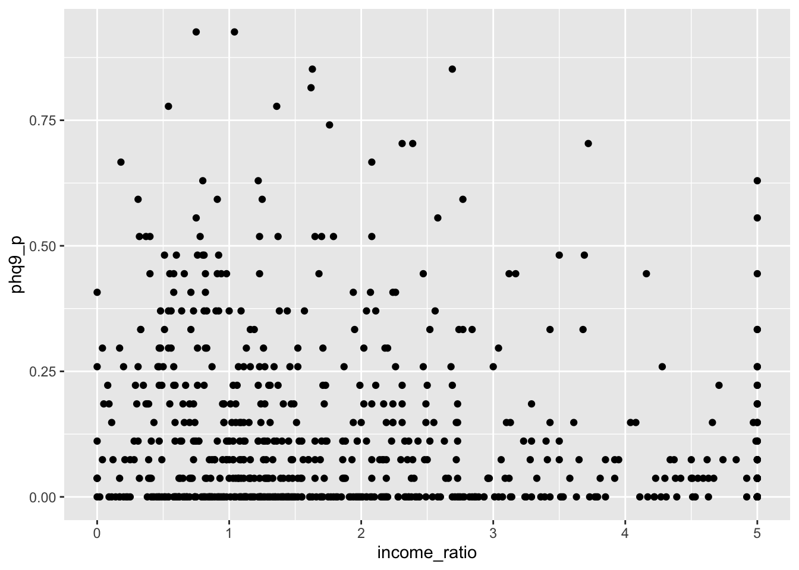

When your outcome variable is a bounded count variable, it has a lower bound of 0 and a fixed upper bound. Specifically, each value of this variable represents the proportion of a success, or presence/endorsement, of that value; in other words, each value in that outcome variable can be thought of a binary proportion. We can use what’s called a weighted binomial regression to model this bounded count variable.
A bounded count variable is easiest to understand and identify with an example. Imagine a test that is made up of 10 questions. To obtain a score on this test, you count how many questions were answered correct out of the 10 questions. In this case, each specific question is made up of a binary event (correct or incorrect). So, the minimum score on this test is 0, and the maximum score on this test is 10. And when we have many people take this test, we get a distribution of scores that can represent the probability/proportion correct of this outcome variable.
Therefore, when we can represent the probability/proportion correct of a fixed upper bound of an outcome variable, based on the success/failure or presence/absence of each value in that outcome variable, we can update binary regression very easily as a weighted binomial regression.
4.2 Data Demonstration
The data for this weighted binomial regression section features a bounded count variable in the form of a score on the Patient Health Questionnaire (PHQ-9). The score on this self-report questionnaire involves adding up the total number of points assigned to each of 9 questions (where each question is worth 3 points); therefore, the minimum score for any patient is 0, and the maximum score is 27 points. According to the PHQ-9, the higher the score, the more severe depression a patient has.
The question we will ask and answer with weighted binomial regression is what can predict a high PHQ-9 score. First, we will consider as our main predictor variable the
In addition to our usual packages (tidyverse, easystats, and ggeffects), we will also need to load DHARMa and qqplotr in order to make our plots for our weighted binary regression models.
## Load packageslibrary(tidyverse)library(easystats)library(ggeffects)library(DHARMa)library(qqplotr)## Read in data from filedepression <-read_csv("depression.csv")depression
# A tibble: 700 × 6
participant cohort age gender phq9 income_ratio
<dbl> <chr> <dbl> <chr> <dbl> <dbl>
1 11 A 40 Male 0 2.73
2 19 A 65 Male 0 4.17
3 23 A 18 Female 0 0.85
4 55 A 19 Female 5 0.09
5 61 A 19 Male 3 1.4
6 77 A 44 Female 2 0.98
7 97 A 53 Male 0 5
8 100 A 60 Female 3 1.55
9 111 A 55 Male 1 5
10 113 A 61 Female 1 1.15
# ℹ 690 more rows
This data shows records for 700 patients screened with the PHQ-9 where each row is one patient.
Here’s a table of our variables in this dataset:
Variable
Description
Values
Measurement
participant
Patient ID number
Integer
Ordinal
cohort
Patient Cohort Group ID
Character
Nominal
age
Age of Patient
Integer
Scale
gender
Gender of Patient
Character
Nominal
phq9
Total Score on the PHQ-9
Integer
Ordinal
income_ratio
Ratio of Income to Debt (Positive is more income than debt)
Double
Scale
4.4 Prepare Data / Exploratory Data Analysis
For weighted binomial regression, in order to model the phq9 score as the outcome variable, we need to re-code each phq9 score for each patient as a weighted proportion out of the max score of 27. Here, we will use the mutate() function from the dplyr package (which is a package that automatically loaded with tidyverse) to add a new column to our data with the weighted PHQ-9 score as phq9_p.
depression2 <- depression |>mutate(phq9_max =27, # maximum possible score (can be same or different per row)phq9_p = phq9 / phq9_max # proportion of maximum possible score per row ) depression2
# A tibble: 700 × 8
participant cohort age gender phq9 income_ratio phq9_max phq9_p
<dbl> <chr> <dbl> <chr> <dbl> <dbl> <dbl> <dbl>
1 11 A 40 Male 0 2.73 27 0
2 19 A 65 Male 0 4.17 27 0
3 23 A 18 Female 0 0.85 27 0
4 55 A 19 Female 5 0.09 27 0.185
5 61 A 19 Male 3 1.4 27 0.111
6 77 A 44 Female 2 0.98 27 0.0741
7 97 A 53 Male 0 5 27 0
8 100 A 60 Female 3 1.55 27 0.111
9 111 A 55 Male 1 5 27 0.0370
10 113 A 61 Female 1 1.15 27 0.0370
# ℹ 690 more rows
4.4.1 Plotting Relationships to PHQ-9
Let’s first plot to see any relationship between the income_ratio and the weighted PHQ-9 score (phq9_p). We tend to see that more of the data points fall in the lower values of income_ratio which suggests a negative relationship between income ratio and depression severity; in other words, the higher the income ratio, the less the score on the phq9_p (and less depression severity).
ggplot(depression2, aes(x = income_ratio, y = phq9_p)) +geom_point()

4.5 Fitting the Weighted Binomial Regression
When we fit our weighted binomial regression, we now will use the glm() function.
We did a lot of work already with the lm() in the “Regression Recap”. The glm() function is in many ways the same as the lm() function. Even the syntax for how we write the equation is the same. In addition, we can use the same model_parameters() function to get our table of parameter estimates. Indeed, we will use the glm() function for the remainder of the rest of the online modules.
But for weighted binomial regression, notice that the glm() function has two more input arguments. These input arguments are the “family” input argument, which requires which “family of distributions” to use and which “link function” choice, and a “weights” argument, which is a column in the dataset that represents the max score for each proportion.
For weighted binary regression, we supply the binomial distribution and the logit link function into the “family” input argument, and phq9_max column name for the “weights” input argument. We then assess the results with model_paramters().
Again, the parameter table output from a model fit with glm() looks very similar to parameter table outputs from models fit with lm(). But there is a big difference – in glm() models, we are no longer working in the same raw units!
This difference is apparent in the second column of the output table: “Log-Odds”. Because we fit a logistic regression with a logit function, the parameter values are in “log-odds” unit. Technically, when income_ratio is in log-odds units, we can only say:
For every one 1 unit increase in income_ratio, there is a 0.15 decrease in the log-odds of having a higher PHQ-9 score (and greater chance of having severe depression)
Although this is technically true, it isn’t at first clear what “0.15 unit increase in log-odds of phq9_p is. It is at this point one may want to convert log-odds to probability. But before we do that, let’s interpret the \(-0.15\) log-odds value:
If log-odds $ = -0.15$, then it is less than 0, meaning it is less likely to have a higher PHQ-9 score (than a lower PHQ-9 score) when we use income_ratio as a predictor.
This effect is also statistically significant from 0 (\(p<0.001\)). Remember, with log-odds, a value of 0 means it is equally likely for an event to occur or not occur. In this case, since it is significantly less than 0, we can say it is more likely to not have a symptom than have a symptom (i.e. score less on the PHQ-9 than score more) when predicted by income_ratio.
4.5.2 Parameter Table Interpretation (Odds)
We can also present the results in odds by using the “exponentiate” input argument.
Now that we are in odds, we can adjust our previous interpretation of the fare parameter for odds:
For every one unit increase in income_ratio, there is a 0.14 increase, or a 14% decrease, in the odds of having a higher PHQ-9 score.[^2]
Recall that when odds \(=1\), that means both events are equally likely to happen. So when the odds read a value like \(0.86\), then we only consider the differences from 1 as meaningful. In this case, that increase is 0.14, or 14%, from our baseline value of 1.